mesh & lamps!
mesh!
While I'm not at all a photographer, I'm interested in devices for 'seeing' (Golan Levin's experimental capture syllabus is a formative reference for me). While 3D scanning is common place nowadays, I thought it'd be a fun place to start to get a messy mesh. Despite 3D scanning being a fairly ordinary technology, my old iPhone doesn't have the TrueDepth sensors required :') so I stole my girlfriend's phone, downloaded the Scandy app, and got this stl. (I can only export one free stl from the app a week, so it was high stakes! The future is a subscription service!)
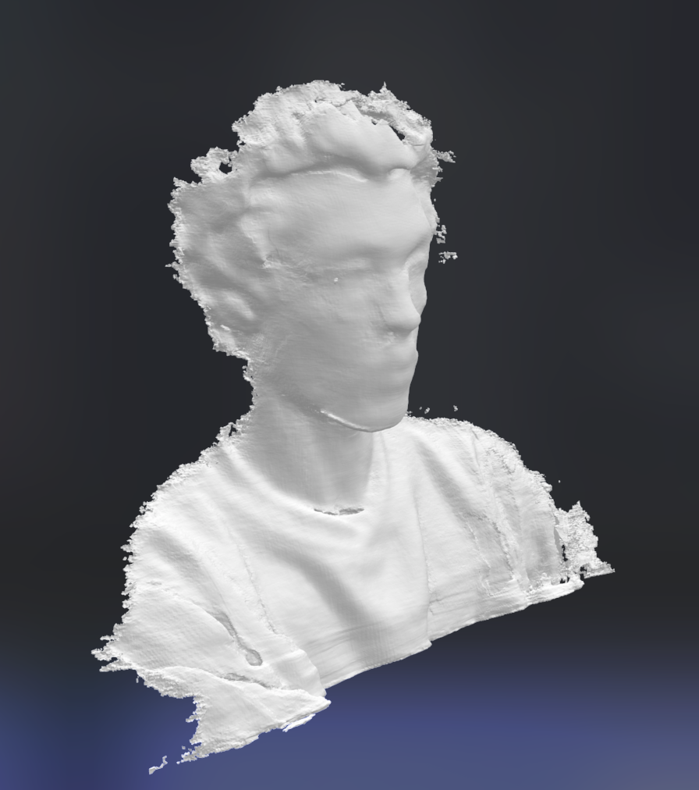
Unsurprisingly, Rhino told me this was a 'bad mesh'. After running through the repair wizard there were still many naked edges. A recommendation from Prof Nadya to use the Drape command worked well; then I cut the mesh with a box to flatten the back, and again on the bottom so the final print would be able to stand upright.
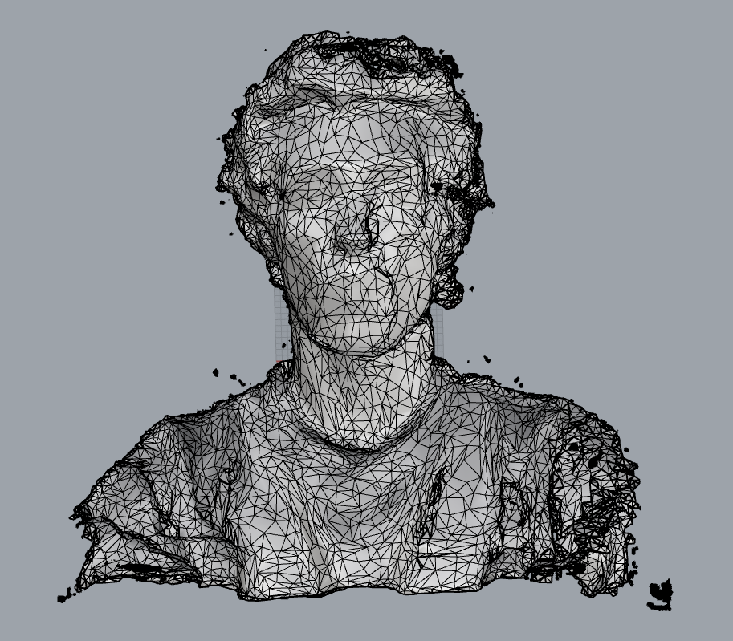
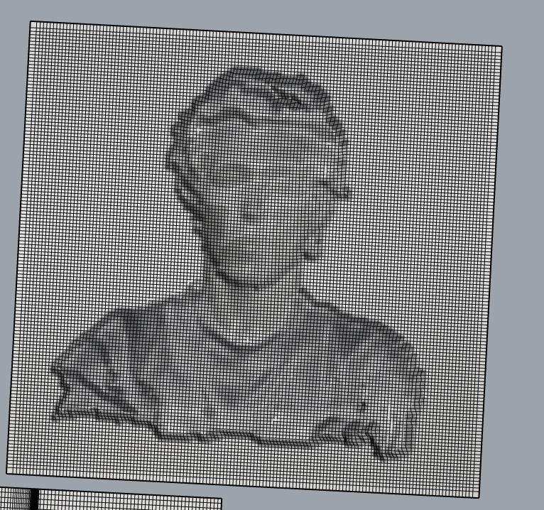
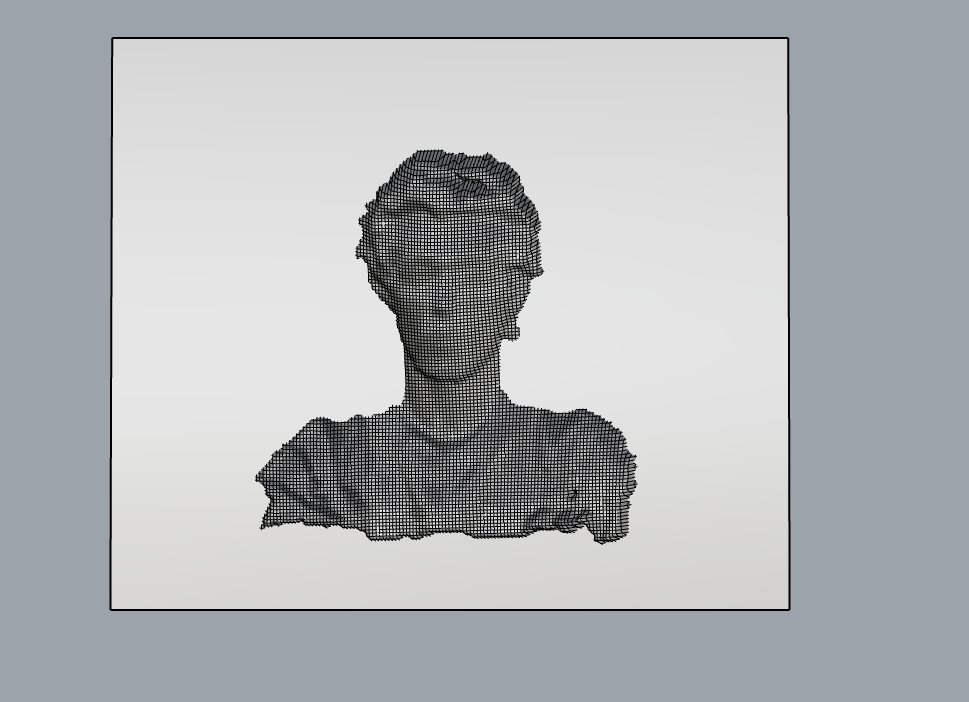
Continuing a Mario theme from assignment 1, I decided to add Waluigi's mustache to my face. I found and stl online, but it included a nose, too. I sliced off the two sides of the mustache and added them to my face. The final stl was a 'good mesh'!
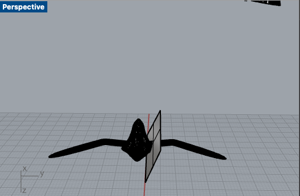
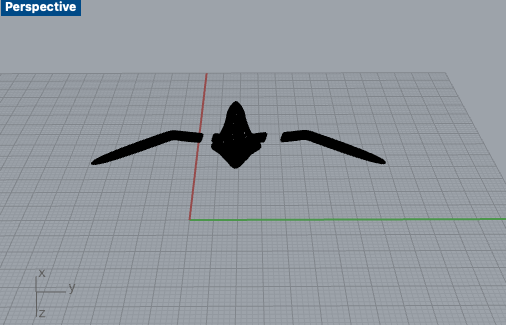
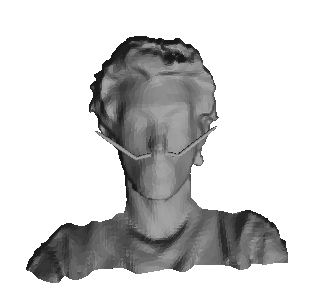
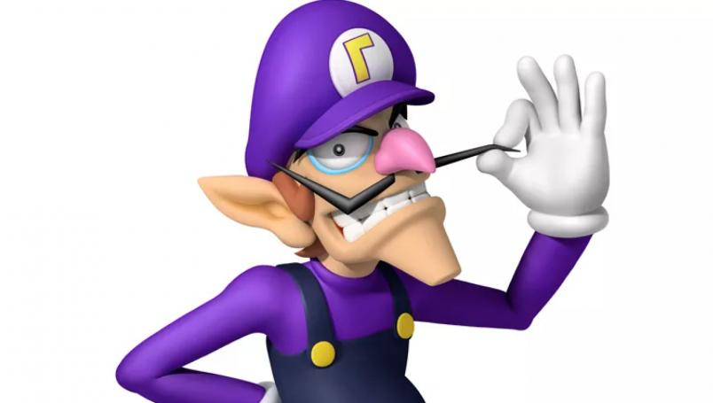
I ended up with Blair and WaBlair. If I add some weight to them, they'd make for very strange bookends.


lamp! (part 1)
I've decided two things about my lamp: I'd like it to be a pendant lamp that drops down from above, and I'd like to do something with shadowcasting. I think it would be fun to make a planetarium lamp with constellations as shadows. I started with NASA deep star maps of the constellations in celestial coordinates. These images are "They are designed for spherical mapping in animation software".
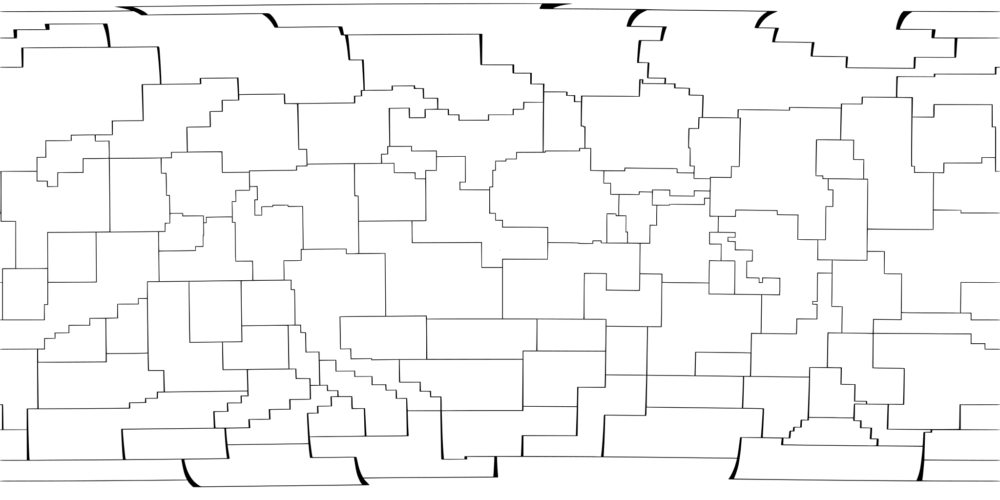
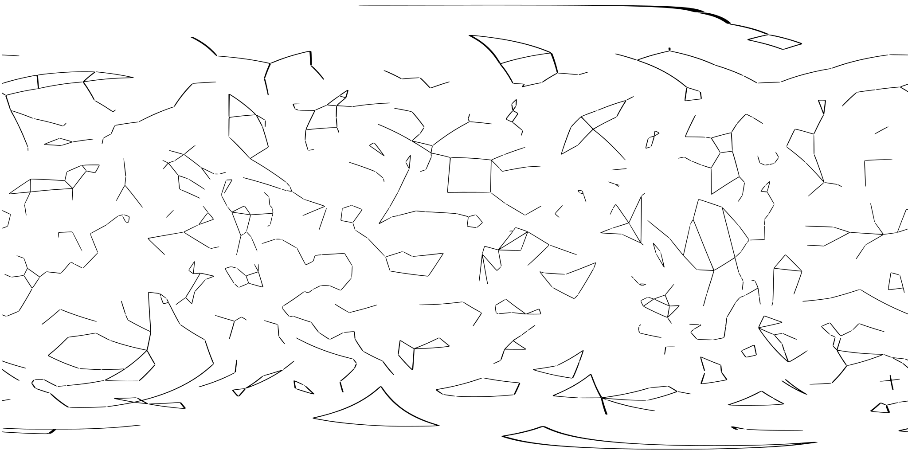
From here, I mostly just dorked around in Rhino thinking of what to do with this. It honestly took me a while to import the svg into Rhino properly- the constellation boundaries kept coming in with extra lines scattered about. I ended up fixing this by exporting an optimized svg from Inkscape. I messed around with spherical texture mapping to visualize things a bit better in Rhino:
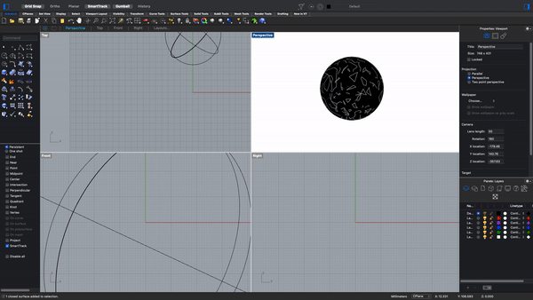
I spent a good while learning how to draw polylines on spheres (click the OSnap 'On polysurface' option!), and how to extrude surfaces from these polylines (explode-->patch-->extrudesrf!). I also learned about the Flow, FlowAlong Surface, and Project commands while trying to see the different ways I could manipulate the original svg. I probably should have thought more about the actual lamp design before figuring all these things out... but it was a formative Rhino learning experience, I think.
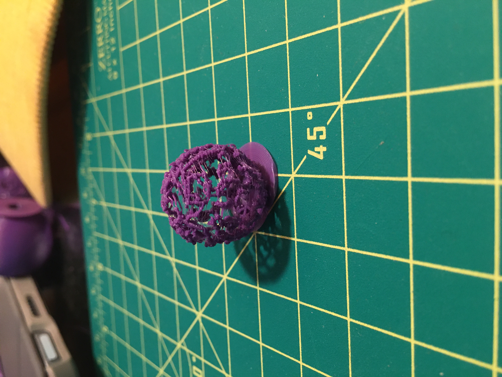